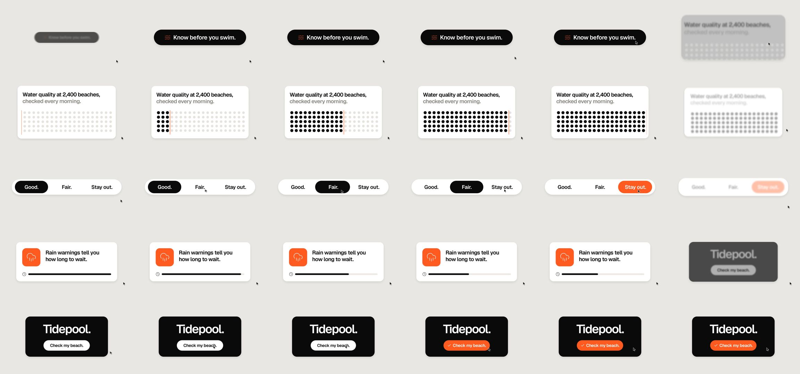

Barty-Bart/motion-graphics: test run, 2026-10-11
The same brief for every skill: a 15-second promo for a made-up app, five fixed lines of on-screen copy, 1920 x 1080 at 30 frames per second. Claude Code (Claude Opus 5.5) made it with the skill in a throwaway sandbox with no API keys for video, image or voice models. 4.7 minutes; sound: no. All results · The brief · How it is checked
Made for adding motion graphics to talking-head footage; with no footage it built a full-frame film of interface cards.
The four checks
| Renders to a playable file | pass | H.264 |
|---|---|---|
| Length, size and frame rate as asked | pass | 15.0 s, 1920x1080, 30.0 fps |
| All five lines readable | pass | 5 of 5 |
| The picture moves | pass | 48% of sampled frame pairs held still |
Frames sampled twice a second

How it was made (the session's closing message)
I made the video with the installed `motion-broll` skill. It's H.264, 1920×1080, 30 fps, exactly 15.00 s (450 frames), with no audio. I checked it with ffprobe and looked at stills from every section. The skill is meant for adding motion graphics to a talking-head video, and the brief has no video. So I used its "full-frame cutaway" mode, which makes one standalone clip. It's one shape that keeps changing shape, never cuts, and a cursor drives each change. I used the skill's default look: warm gray background, black and white shapes, one orange accent. Because there was no video, I skipped the two steps that need one: the preview with the clips cut in and the before/after comparison page. I also skipped the skill's questions and its plan-approval step, as you asked. What's on screen, using your copy exactly: | Time (s) | Copy | What you see | |---|---|---| | 0–2.6 | Know before you swim. | A black pill with a small waves icon; the cursor clicks it | | 2.6–5.7 | Water quality at 2,400 beaches, checked every morning. | A white card with a grid of dots that fill in as an orange line sweeps across | | 5.7–8.7 | Good. Fair. Stay out. | A three-part switch; the cursor clicks through it and the highlight turns orange on "Stay out." | | 8.7–11.6 | Rain warnings tell you how long to wait. | An orange rain tile and a bar that shrinks | | 11.6–15 | Tidepool. Check my beach. | A black card; the cursor clicks the button and it turns orange with a check mark | - **Additions:** apart from the copy, the video shows only icons, dots and bars. There are no other words, numbers, claims or logos. The dot grid and the shrinking bar are just pictures; they don't show a count or a wait time. - **Setup fix:** the skill's setup script failed when given a relative path, so I ran it with the full path instead. That changed nothing in the skill itself. - **Project:** everything I rendered from is in `~/work/project/motion`. The clip source is `clips/01-tidepool.html`, and the render, `plan.json` and `out/TIMING.md` are there too. DELIVERABLE: ~/work/output/video.mp4